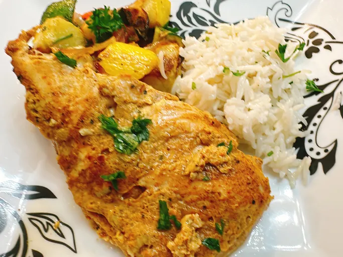

Mediterranean Sheet Pan Chicken

This Mediterranean sheet pan chicken, tender chicken breast is marinated in creamy Greek yogurt with shawarma spices, fresh garlic, and dill pickle juice, making every bite tangy, bright, and unbelievably juicy. Pile into a warm pita or serve it over rice with roasted veggies.
Ingredients
- 1 pound skinless boneless chicken breasts
- 1 cup plain Greek yogurt
- 1/4 cup dill pickle juice
- 6 garlic cloves, minced
- 2 tablespoons shawarma seasoning
Steps
- Slice chicken breasts into pieces about the size of a deck of cards.
- Add yogurt, pickle juice, garlic, and shawarma seasoning to a resealable plastic bag or shallow dish with a lid. Mix until thoroughly combined. Add chicken; massage the bag to coat chicken breasts. Refrigerate overnight.
- Preheat the oven to 400 degrees F (200 degrees C) and line a sheet pan with foil. Mist with nonstick spray.
- Remove the chicken pieces from marinade and shake off excess. Place chicken on the prepared sheet pan.
- Bake in the preheated oven until no longer pink at the center and juices run clear, 20 to 25 minutes.
HOME